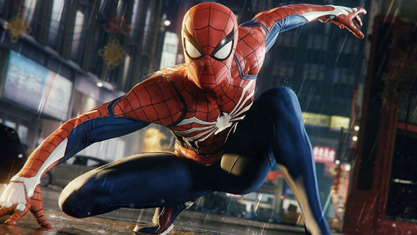
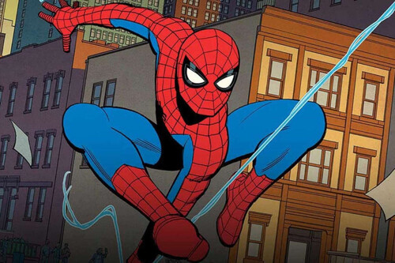
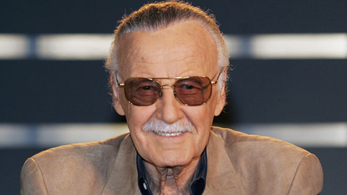
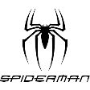
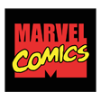
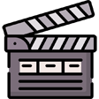
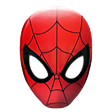

Es un superhéroe ficticio creado por los estadounidenses Stan Lee y Steve Ditko, e introducido en el cómic Amazing Fantasy n.° 15, publicado por Marvel Comics en agosto de 1962. Se trata de un superhéroe que emplea sus habilidades sobrehumanas, reminiscentes de una araña, para combatir a otros supervillanos que persiguen fines siniestros.
 Su creación se remonta a principios de la década de 1960 como respuesta al creciente interés del público adolescente en los cómics y el éxito de Los 4 Fantásticos. Tras su primera aparición en Amazing Fantasy, Marvel decidió producir una serie individual titulada The Amazing Spider-Man, cuyo ejemplar inicial salió a la venta en marzo de 1963.
Stan Lee fue un escritor y editor de cómics estadounidense, además de productor y actor ocasional de cine. Es principalmente conocido por haber cocreado personajes icónicos del mundo del cómic tales como Spider-Man, X-Men, Los 4 Fantásticos, Hulk, Iron Man, Thor, Daredevil, Doctor Strange, Black Panther, Ant-Man y Bruja Escarlata, entre otros muchos superhéroes, casi siempre acompañado de los dibujantes y escritores Steve Ditko y Jack Kirby.
Generalmente su identidad secreta es Peter Parker, un joven huérfano neoyorquino que adquiere superpoderes después de ser mordido por una araña radiactiva, y cuya ideología como héroe se ve reflejada primordialmente en la expresión "un gran poder conlleva una gran responsabilidad". Suele ser asociado con una personalidad bromista, amable, inventiva y optimista, lo que le ha llevado a ser catalogado como el "vecino amigable" de cualquiera lo cual, junto a sus vivencias caracterizadas por los problemas cotidianos, atrajeron el interés del público al contrastar con el arquetipo de superhéroe de la industria.
Su franquicia incluye producciones televisivas, cinematográficas, radiofónicas, literarias y de videojuegos. Los actores que han interpretado al personaje en el cine son:
| Aliados | Neutrales | Enemigos |
| Harry Osborn | Flash Thompson | Venom |
| Tía May | George Stacy | Duende Verde |
| Tío Ben | J.J.Jameson | Hombre Arena |
| Ned Leeds | Ursula Ditkovich | Dr.Octopus |
| Mary Jane Wattson | Sr.Ditkovich | Mysterio |
| Gwen Stacy | Dr.Curtis Connor(Sin convertir) | Elektro |
Fuente:
WikipediaContacto:
MuruagaOtras Páginas de Spider-Man:
   